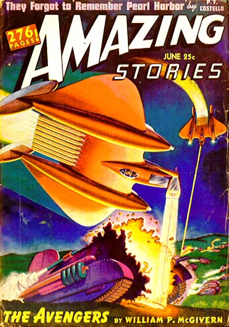

A Los Angeles (Californie), les sirènes conçues
pour donner l'alerte en cas de raid aérien se mettent à hurler. Les groupes de D.C.A. sont en alerte. La
panique s'installe dans la ville, qui fait un black-out.
Les batteries de l'artillerie anti-aérienne (AAA) commencent à tirer sur des
engins non identifiés venant de l'océan, et que les faisceaux des projecteurs tentent de cerner dans
le ciel. Il semble y avoir au moins 2 types d'engins impliqués dans l'incident. Les témoins voient de petits
objets volant à haute altitude, de couleur rouge ou argentée, se déplaçant à vive allure, qui apparaissent
en formation puis semblent se frayer un chemin à travers les salves de l'AAA à une allure allant jusqu'à 8
km/s — soit 29000 km/h. Il y a également un grand objet qui demeure quelque temps stationnaire, puis est
pris dans le feu des projecteurs au-dessus de Culver City, et dès lors se déplace à une allure constante de
100 km/h jusqu'à la côte de Santa Monica et puis au sud, en direction de Long Beach, avant qu'on ne le perde
de vue. Ce grand objet a, d'après les rapports, été atteint de nombreux projectiles. L'AAA continue à le
mitrailler.
L'AAA stoppe de mitrailler. Aucune bombe n'a été lancée par les appareils
inconnus et aucun appareil n'a été abattu.
Objets lumineux photographiés au milieu d'une formation d'avions de reconnaissance Tahikawa Ki 36
Jean-Luc Chaumeil, Le temps et les OVNI
A la base aérienne secrète de Banak (province de Finnmark, Norvège)
le poste de guet donne l'alarme ; les hommes se rendent à leurs postes de combat, les pilotes à leurs
appareils. A la binoculaire, les observateurs aperçoivent un engin se rapprochant silencieusement. Le
Hauptmann Fischer (ingénieur dans le civil) décolle sur un Messerschmitt 109 (de chasse) pour l'intercepter.
A 3500 m d'altitude il s'en approche, l'observe, et en donne une description en phonie : c'est un énorme corp fuselé, sans aucun plan
de sustentation, sans aucune ouverture visible ; sa longueur est d'environ 100 m et son diamètre d'environ
15 m ; à une extrémité un groupe de tiges ressemblant à des antennes radar. La baleine aérienne comme
le surnomme aussitÖt le capitaine Fischer, se maintient horizontalement ; brusquement elle monte
verticalement à grande vitesse et disparaît ; le pilote conclut qu'il ne peut s'agir d'un engin fabriqué de
main d'homme. Le rapport est signé du capitaine Fischer, contre-signé du commandant de base Rapport adressé à l'Oberkommando der Luftwaffe, Durrant 1973. Quand, à Berlin, le
Maréchal de l'Air Hermann Goering en prend connaissance, il en conclut que la
dure solitude du Grand Nord a joué un sale tour à son pilote apparemment un canularDurrant 1970, 84OVNI présence, 1983-12-28, 1984-06-30Liljegren: A bibliography of references to UFO incidents during World War II, 1987, 8..
Couverture de Amazing Stories ce mois-là

Près de Hyde Park (New York), on croit observer des parachutistes "Cackling Out Of
Turn", Daily Citizen de Tucson (Arizona), 1942-07-20.
Dans les Salomon, le sergent-chef Stephen Brickner signale 150 ovnis volant en formation rectangulaire, 15 sur
la longueur et 10 sur la largeur.
Photographie à Tientsien (province de Hopeh, nord de la Chine). Une lampe semblable à celle de la photo de Jack LeMonde à la même époque ?
Masujiro Kiru
Photographie à Tientsien, province de Hopeh, Nord de la Chine. Masujiro Kiru a trouvé
cette photo dans l'album de son père de la Campagne de Chine juste avant la 2nde guerre mondiale. Son père l'avait
lui-même achetée à un photographe de Tientsien, apparemment juste après qu'elle soit prise.
2 jeunes aviateurs en simple mission de surveillance prennent l'air en dirigeable pour patrouiller le long de la
côte Californienne. Plus tard, 2 pêcheurs aperçoivent l'appareil dérivant, la porte de la gondole ouverte. Il n'y a
plus personne à bord. Après enquête, on apprend que le dirigeable est entièrement sorti au-dessus des nuages et a été aperçu par un avion, puis il y
est redescendu. 4 navires l'ont vu survoler une tache d'huile suspecte et remonter brusquement dans les nuages.
A Cresswell (Angleterre) près de Newbiggin-by-the-Sea, Northumberland, lors d'une
nuit anormalement froide, Albert Lancashire (27 ans), armé d'un fusil avec baïonnette au canon, garde une base
radar sur la cÖte de la Mer du Nord. Une lumière apparaît à l'horizon, puis disparaît derrière un nuage. Ensuite
apparaît une 2nde lumière, jaune, apparemment un rayon dardé depuis le rebord d'un objet circulaire. Le rayon,
d'environ 30 cm de diamètre, oscille alentour puis darde sur le visage de Lancashire. Le soldat lâche son fusil
et lève les mains. Il ressent une étrange sensation de flottement et perd connaissance. Lorsqu'il revient à lui
quelques mn plus tard, il gît à quelques mètres de l'endroit où il avait vu la lumière. Il demeure choqué et
hébété durant 5 ou 10 mn avant de se sentir pleinement remis et à même de reprendre sa veille.
Durant les années qui suivirent cet incident, Lancashire fera un certain nombre de rêves bizarres. Dans l'un
d'eux, il se souviendra avoir été à bord de l'objet qu'il vit, et avoir observé la mer en contrebas depuis une
large fenêtre ; un homme en blanc lui disait qu'il avait fallu l'embarquer à bord de l'engin. Dans un autre
rêve, Lancashire, était encore dans l'appareil et rencontrait une femme rousse, vêtue d'une jupe s'arrêtant aux
mollets à la mode cette année-là) qui lui tendait une paire de lunettes. Des années plus tard, Lancashire en
vint à penser que la meilleure explication pour son expérience de 1942 était qu'il avait été enlevé par des
extraterrestres. Il ne rapporta l'incident qu'à partir de ses 70 ans Mysterious Britain.
Au-dessus de la Mer du Japon
Un bombardier Sally impérial japonais, en mission au-dessus de la Mer du Japon, est approché par un petit objet
sphérique sombre qui vole autour et entre les appareils en formation. Un caméraman-tireur en alerte prend une
photographie (ci-contre).
Le général Brehon Somervell indique au colonel Leslie Richard Groves que son
affectation hors du territoire américain est annulée, et l'affecte au projet Manhattan.
Groves ordonne l'achat de 1250 t d'uranium de haute qualité provenant du Congo Belge.
Groves achête 52 000 acres de terrain pour le futur site de Oak Ridge.
Groves est promu brigadier-général.
Après 2 tentatives infructueuses, troisième lancement réussi d'un V-2.
Groves demande à Robert Julius Oppenheimer de prendre la
direction du projet Y, le nouveau laboratoire central de recherche physiques pour conception d'armes.
Observation en Norvège.
Au large de Casablanca, la Flotte Atlantique américaine voit un "V" lumineux dans
le ciel, interprété comme le V de la victoire "Light
In The Sky Formed 'V' In Casablanca", Times de Hammond (Indiana), 18 décembre 1942, p. 64.
![Objets lumineux photographiés en 1942 au milieu d'une formation d'avions de reconnaissance Tahikawa Ki 36 [Jean-Luc Chaumeil, Le temps et les OVNI]](/science/crypto/ufo/enquete/dossier/FooFighters/foofig_1.jpg)